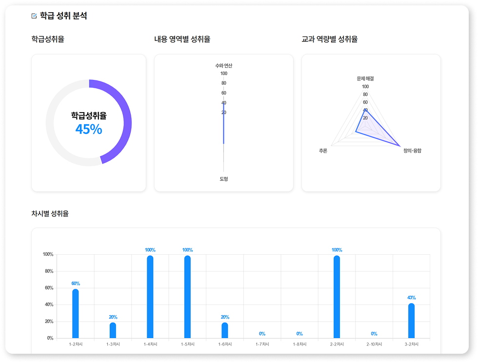
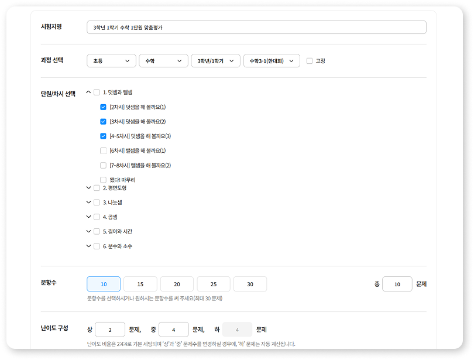
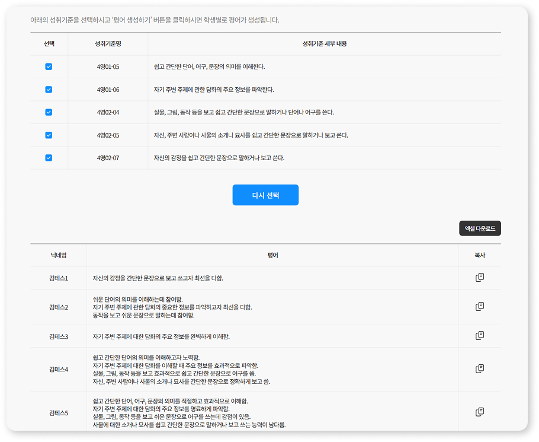
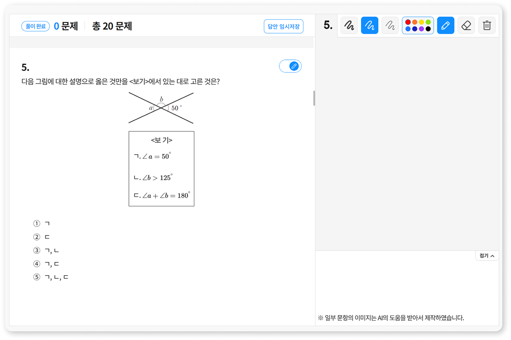

● 경력 프로젝트
지니아튜터
천재교과서 T셀파 기반의 공교육 특화 평가·분석 서비스. 대규모 학업 성취도 데이터를 다루며 통계 집계와 저장 로직의 병목을 반복적으로 개선했습니다.
BackendJava 8 · Spring Framework · eGovFrame(전자정부 표준프레임워크) · MyBatis · Maven
FrontendJSP · JavaScript · jQuery · HTML5 · CSS3
DatabaseMariaDB
Infra/ToolsAWS(EC2, S3) · NCP · Git(CodeCommit, SourceTree) · Redmine
학급 성취 리포트
대규모 학업 성취도 데이터 파이프라인 구축 및 통계 집계 최적화

작업 내용
- Chart.js를 활용한 데이터 시각화 대시보드 구현
- 통계 데이터 집계 API 및 상세 리포트 연동 로직 설계
- 반복 서브쿼리를 제거하고 MyBatis 내 GROUP BY·집계 함수 최적화
- 대량 데이터 조회를 대비한 통계 쿼리 최적화 및 응답 속도 개선
성과
- 학급·내용영역·차시별 성취율을 한 화면 대시보드로 모아 교사가 채점 결과를 즉시 확인
- 학생별·평가별 채점 결과 집계를 자동화해 교사가 수기로 계산하던 분석을 대체
3초대 → 0.2초대
리포트 응답 시간
약 20명 · 200문항
기준 부하
즉시 로딩
체감 개선
🔧 트러블슈팅
문제
한 학급 전체 학생 × 다수 평가 내역 × 문항별 성취율을 다중 JOIN 및 반복 서브쿼리로 집계하면서 대시보드 로딩이 3초대로 지연.
해결
반복 서브쿼리를 제거하고 MyBatis 내 GROUP BY·집계 함수를 최적화해 쿼리를 재구성. 가공된 통계 데이터를 Chart.js와 연동해 교사용 맞춤형 시각화 대시보드를 구축.
성과
한 학급(약 20명)·문항 200여 개 기준으로 리포트 응답이 3초대에서 0.2초대로 단축. 로딩 지연이 사라져 바로 뜨는 수준으로 향상.
맞춤 과정 생성 · 공유
교사별 맞춤 교육 환경 제공 및 플랫폼 내 교육 콘텐츠 재사용

작업 내용
- 계층별 과정 데이터 비동기(AJAX) 조회 API 설계
- 난이도 비율(상/중/하) 기반 동적 문항 추출 (MyBatis)
- 게시판 CRUD 및 원본 과정 연동 API 설계
- 원본 과정 복제 및 권한 매핑 로직 구현
성과
- 교사가 단원·차시와 난이도 비율을 골라 학급 맞춤 시험지를 직접 구성
- 교사 간 시험지 공유·복제로, 이미 만든 과정을 다시 만들지 않고 재사용
2초대 → 0.3초 미만
복제 속도
약 85% 단축
DB I/O 부하 감소
단일 트랜잭션
원자성 확보
🔧 트러블슈팅
문제
교사 간 시험지(맞춤 과정)를 공유·복제할 때 연결된 수십 개 문항을 개별 루프로 단일 INSERT 처리하여 DB I/O 부하와 복제 지연(2초대) 발생.
해결
개별 INSERT로 돌던 복제 로직을 MyBatis <foreach> Bulk Insert로 바꿔 한 번의 쿼리로 처리하고, 전체를 단일 트랜잭션으로 묶어 중간 실패 시 롤백되게 함.
성과
복제 속도 약 2초대에서 0.3초 미만으로 약 85% 단축, 데이터 정합성과 단일 트랜잭션 원자성 확보. 교육 콘텐츠 재사용성 향상.
교과 평어 자동 생성 서비스
학생 성취도 기반 교과 평어 자동 생성 서비스 개발

작업 내용
- 성취 기준 및 상/중/하에 따른 맞춤형 평어 데이터 매핑·추출 로직 설계
- 다수의 학생/평어 데이터를 한 번에 처리하는 Bulk Insert 파이프라인 구축
- 평가 결과 리포트 엑셀(Excel) 다운로드 기능 구현
성과
- 학기 말 평어 작성 시즌에 교사들이 실제로 쓰는 기능으로 자리잡음
- Bulk Insert로 저장 로직을 바꿔, 학기 말 동시 저장이 몰려도 지연 없이 처리
5초대 → 0.3초대
저장 응답 속도
약 94% 단축
응답 개선
데이터 누락 0
대량 저장 안정성
🔧 트러블슈팅
문제
학기 말 평가 시즌, 한 학급(약 30명) 단위로 성취도 평어를 저장할 때 ‘학생 수 × 성취기준 수’만큼 단일 INSERT가 반복 호출되어 트랜잭션 오버헤드 발생. 평균 응답 5초대, 동시 접속 시 서버 부하가 커지는 병목을 사전 발견.
해결
성취도 기반 평어 데이터 매핑·자동 생성 로직을 설계하고 MyBatis <foreach> 기반 Bulk Insert 파이프라인으로 저장 로직을 전면 리팩토링. 저장 건수가 예측 가능하고 단일 트랜잭션 원자성이 필요해 배치 삽입 방식을 선택.
성과
응답 속도 약 5초대에서 0.3초대로 약 94% 단축, 대량 저장 시 데이터 누락 위험 원천 차단.
학습 필기 기능 고도화
학습 문항 필기 기능 고도화 및 UI 개선

작업 내용
- canvas.js를 활용한 드로잉(펜·색상·지우개) 인터페이스 구현
- 문항 스크롤 이벤트와 필기 영역 간 동적 렌더링·좌표 동기화 로직 개발
- 직관적인 필기 도구 UI/UX 전면 개편
성과
- 문항을 넘길 때 필기 좌표가 어긋나 다시 그려야 했던 문제를 해결
- 스크롤 위치와 Canvas 기준점을 동기화해 이동 후에도 필기 위치 유지
🔧 트러블슈팅
문제
기존 페이지의 UI 제어 스크립트와 HTML5 Canvas 드로잉 이벤트 리스너가 충돌해 필기가 끊기고, 스크롤 이동 시 렌더링 좌표가 어긋나는 문제 발생.
해결
필기 관련 모든 변수·함수를 독립 모듈로 캡슐화해 전역 오염을 방지하고, 스크립트 실행 순서와 의존성을 재설계. 브라우저 스크롤 좌표와 Canvas 렌더링 기준점을 동기화.
성과
기존 기능에 영향을 주지 않는 독립적이고 안정적인 드로잉 환경 구축, 독립 드로잉 모듈로 분리.